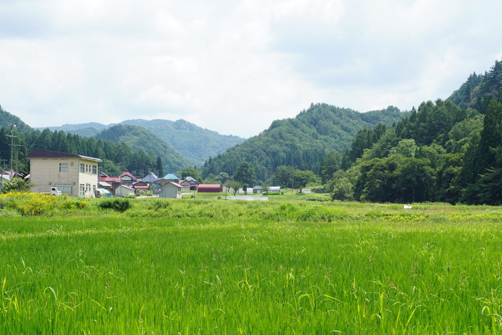
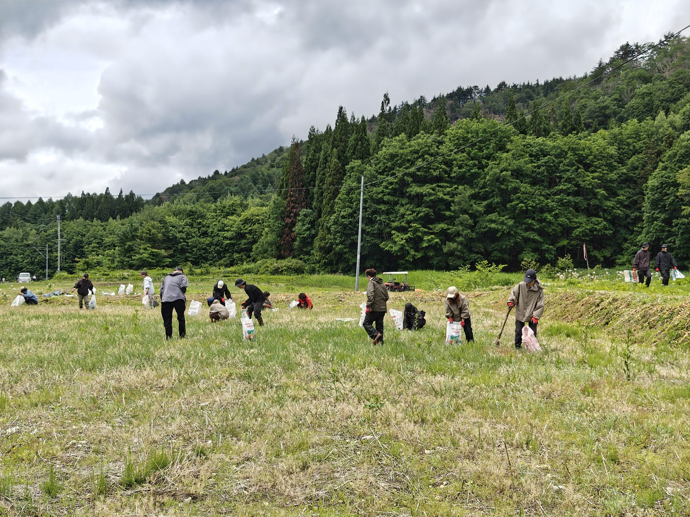
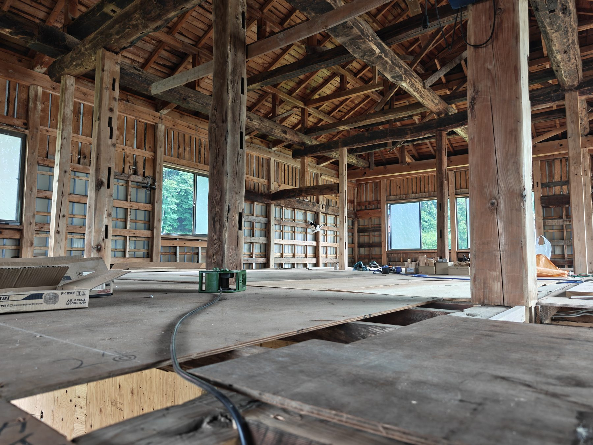
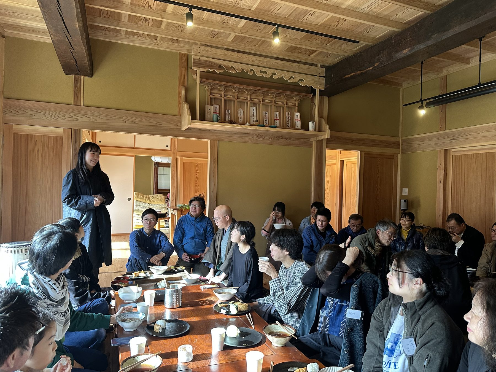
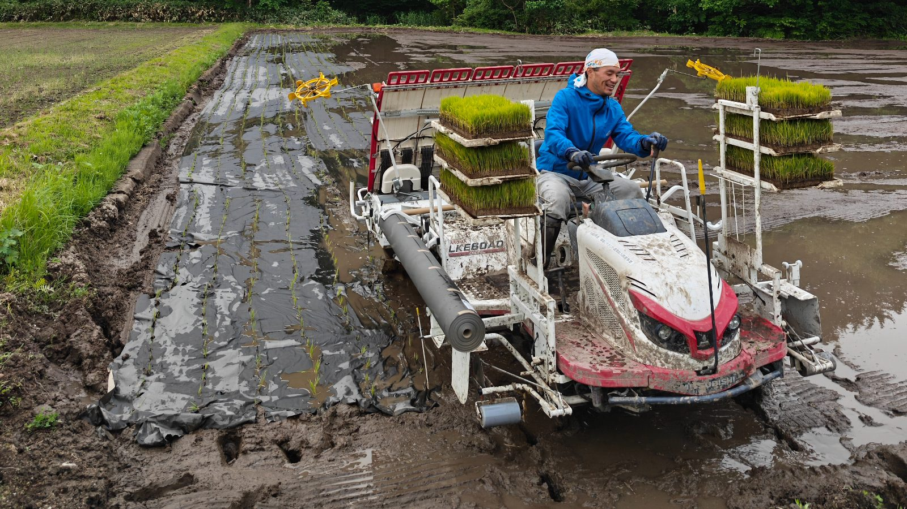
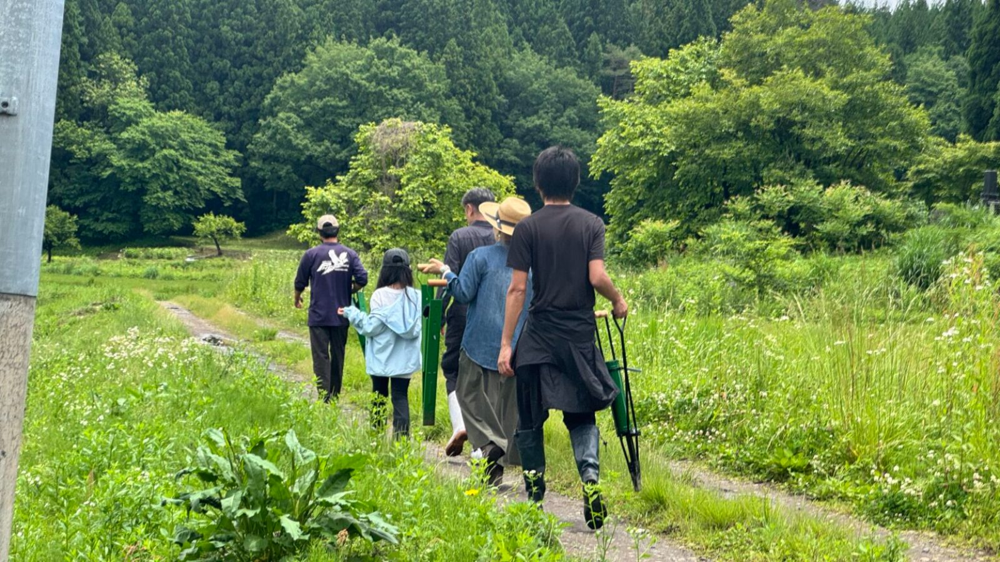
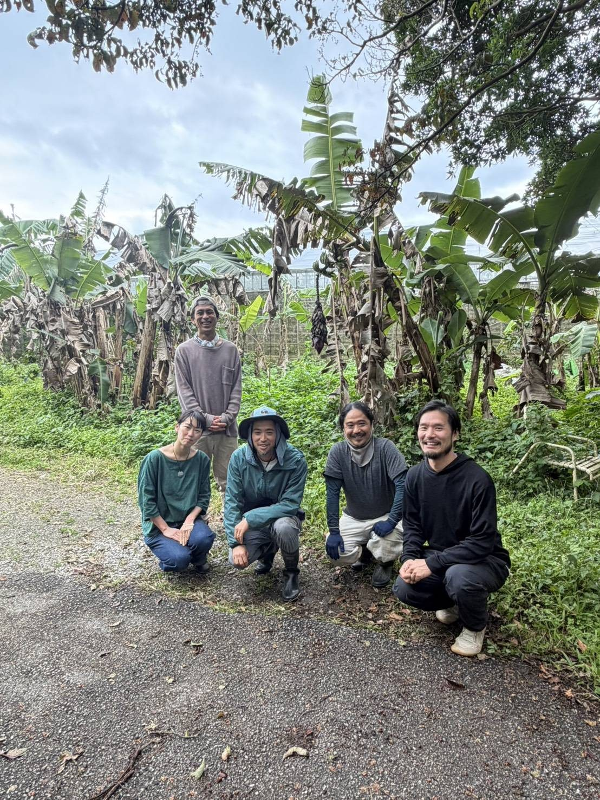
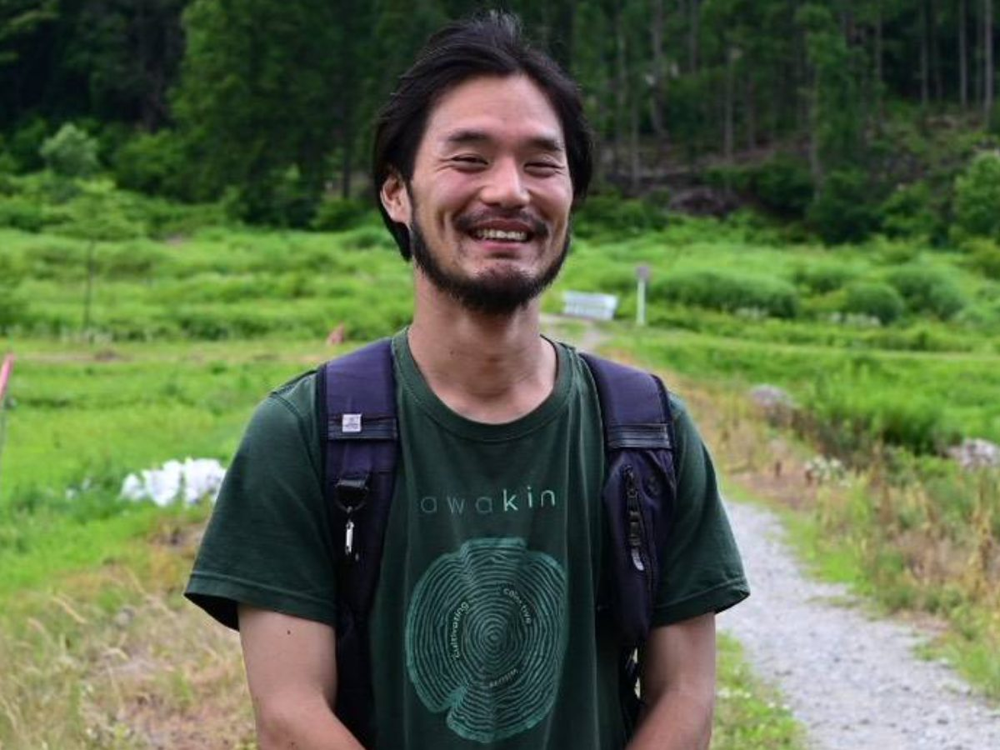
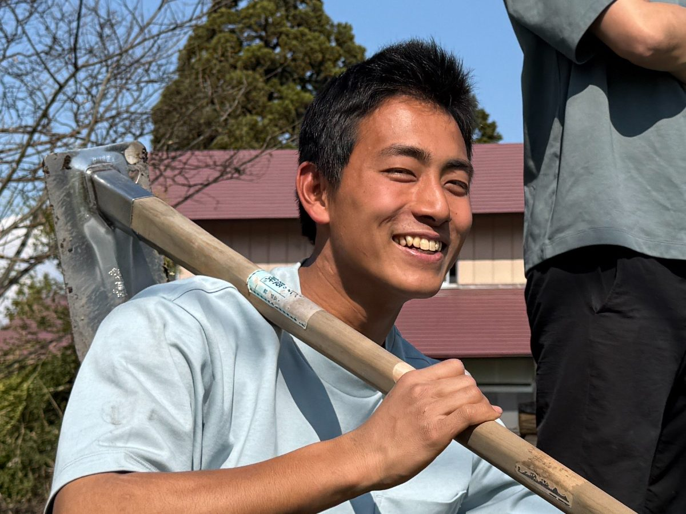
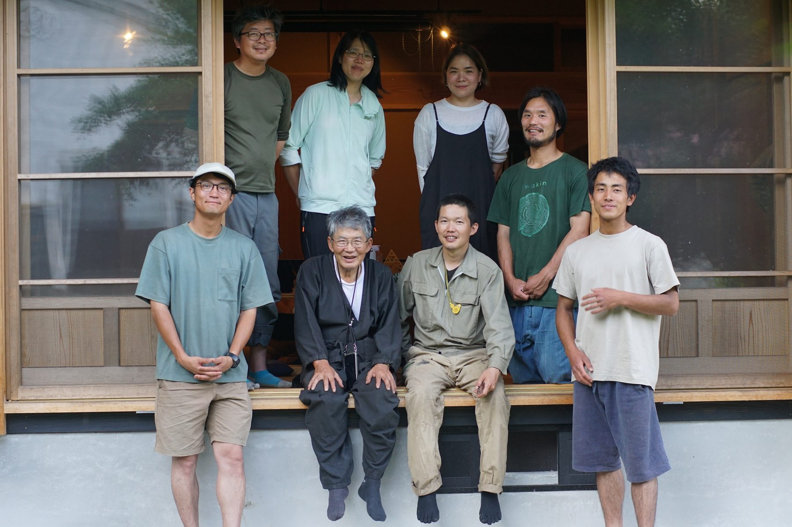

Grow
Practice low-till, low-input natural rice and soybean farming, and build a base of production and storage so the region can keep feeding itself.
SHINDOAIZU / OKU-AIZU
We are looking for newpartners and field members.
NATURAL FARMING → LIFE-BASE BUILDING
SHINDO is a project based in Aizu and Oku-Aizu, Fukushima, working to establish natural farming, revive abandoned farmland and old houses, care for the natural environment, and create places for learning. Food, housing, energy, health, and shared learning — we are rebuilding the foundations of life with our own hands.

I / 01
WHY SHINDO
Farming is the entry point for rebuilding the basis of everyday life.
What we eat, where we live, the energy we use, the habits that keep us healthy, and the places where children and adults learn.
Without quite noticing, we have handed much of what sustains our lives over to distant systems.
SHINDO is not simply trying to scale up farming. Its aim is to cultivate soil that bears fruit every year, houses that can be passed on, the wisdom to survive, and companions to build with — a foundation for life that will remain for the next generation.
II / 02
FIELD NOTES



III / 03
WHAT WE DO
Practice low-till, low-input natural rice and soybean farming, and build a base of production and storage so the region can keep feeding itself.
Bring abandoned farmland, waterways, forests, old houses, and farm sheds back into use.
Build farm machinery suited to hilly terrain, and test locally sourced energy and new ways of living.
Through farm volunteering, student programs, shared living, and dialogue, children and adults learn and grow together.
IV / 04
PROJECTS

Trialing rice cultivation that does not depend on large tractors, in a heavy-snow region at 800 m elevation. The near-term target is 360 kg per 1,000 m².

A working community that connects city and farm around a circular way of life. Together we design relationships that let everyone involved keep standing on the production site.

Under the banner of IKIGAI — a society where people can live happily to the end — newcomers are taking over the farm. It made a fresh start as a new farm in 2026.
V / 05
PEOPLE & NETWORK
SHINDO's founding members, Munokai Natural Farm as our base, the craftspeople who support the field, partners from across Japan, and the villagers who work alongside us in Showa Village — together they make this project.
VI / 06
TRAJECTORY IN NUMBERS
23 ha
Munokai Natural Farm, now in its 21st year, manages one of the largest areas of organic rice cultivation in Fukushima.
Our base, Munokai Natural Farm, + ZEN-BU
2021 → 2025
Began practicing organic and natural farming in 2021, founded ZEN-BU in 2023, and renamed the project SHINDO in 2025.
From the first season in Aizu to today
30 partners
Through presentations and dialogue, co-creation with companies and individuals across Japan has begun.
ZEN-BU Inc. ／ Participants from across Japan
400 people
People keep coming to support the field in their own ways — farm volunteering, building projects, cooking meals.
Munokai Natural Farm + ZEN-BU ／ 2025
Index of people
PEOPLE

Founder, CEO of ZEN-BU
After aspiring to be a scholar, he turned to natural farming in search of a livelihood closer to the essentials. He visited more than 30 farms across Japan before moving to Aizu in 2021.

Co-founder, ZEN-BU
Moved to Aizu in the winter of his senior year of university. He leads education and site development, bridging city students and rural farming.

Our base
Founded 21 years ago, the largest JAS-certified organic farm in the prefecture. The source of SHINDO's practical knowledge.
VII / 07
MEMBER & PARTNERSHIP
Get to know the land, the people, and the work through farm volunteering or a site visit.
Ask about volunteering or visiting →Live in this village and, over five to ten years, build a way of life and a community together. Families are welcome.
See the terms →Keep your current job and life, and come to Aizu once a month or every other month.
See how to take part →Support a foundation that will last, through funding, skills, or work.
Learn more →GRAND VISION / Final chapter